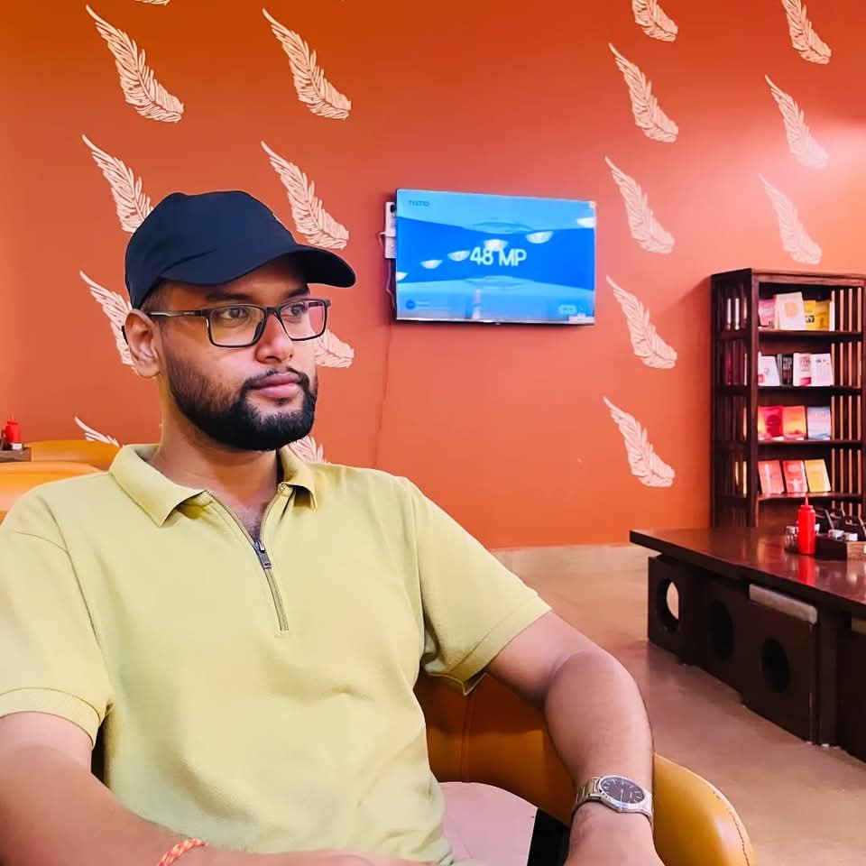
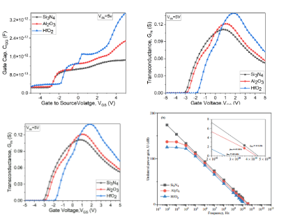

|
Nabojwal Acharjee
I am a Doctoral Student at Tezpur University, Assam under the joint supervision of Prof. D. Hazarika and Prof. V. K. Nath, where my research work entails design and development of deep learning models tailored for Medical Image Computing, specifically disease prediction, classification, image segmentation and anomaly detection etc. During my MTech at North Eastern Regional Institute of Science and Technology (NERIST), Arunachal Pradesh, I had the oppurtunity to work in the Ray-Bordoloi-Group under the guidence of Prof. A. K. Ray, where I worked on AlN/Ga2O3
-based HEMT modelling for RF applications. I received my Bachelors Degree in Electronics and Communication Engineering from North Eastern Regional Institute of Science and Technology, Arunachal Pradesh.
My current research interest lies at the intersection of Image Processing/Computer Vision and Deep Learning. Lately, I have been working on ViTs, NO, SSMs, GAN & DDPM for mediacl imaging.
I am open to research opportunities and eager to contribute to collaborative and interdisciplinary research efforts. I can be reached via email.
Email /
Google Scholar /
LinkedIn /
CV
|
 |
|
Journal Publications and Preprints
|
|

|
Investigation of High-k Dielectric Passivation Effects on DC Performance of AlN/β–Ga2O3 HEMTs
Nabojwal Acharjee, S. Singh, A.P. Dadi, et al.
Semiconductors, Vol. 59, pp. 452–464 (2025)
DOI: 10.1134/S1063782624602632
This work presents a comprehensive TCAD-based analysis of AlN/β–Ga2O3 HEMTs with various high-k dielectric passivation layers. The study evaluates DC performance enhancements across Si3N4, Al2O3, and HfO2 configurations, highlighting trade-offs in peak current, threshold voltage, and transconductance.
|
“Science is the poetry of reality.” – Richard Dawkins
Thank you for visiting!
|
|